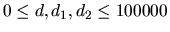
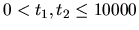
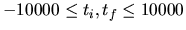
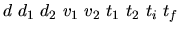

A motorway is passing through a tunnel, d meters long,
as illustrated in figure 1. The rate of the traffic
directed eastwards is of one vehicle every t1 seconds, and the
rate of the traffic directed westwards is of one vehicle every
t2 seconds. The vehicles going east have a constant speed of v1
m/s, while the vehicles going west have a constant speed of v2
m/s.

Figure 1: The motorway
Write a program that computes the number of vehicle `rendezvous'
that occur inside the tunnel during the closed time interval
[ti,tf] that is measured in seconds. It is known that:
- A rendezvous point is considered inside the tunnel if
it is in between the entrances of the tunnel. Rendezvous at
the tunnel entrances are outside the tunnel, as shown in figure 1.
- At time 0 there is a vehicle advancing eastwards that is
d1 meters away from the entrance of the tunnel, and there is
another vehicle advancing westwards that is d2 meters away from
the entrance of the tunnel. These vehicles are part of the already
existing traffic on the motorway.
- Input and output data are integers. The magnitude range of the
problem parameters is as
follows:
,
,
.
The program reads sets of data from a text file. Each data set is
on a separate line and has the format:
.
The input data are correct. For each data
set the program writes to the standard output the number of
rendezvous. Each result is on a separate line. An example of
program input/output for six data sets is shown in the sample below.
1 0 0 1 1 1 1 0 10
2 1 1 1 1 1 1 0 1
3 2 1 1 1 1 1 0 0
3 2 1 1 1 1 1 1 1
3 2 1 1 1 1 1 0 1
6525 100000 55000 22 33 3 4 -10000 -3600
10
4
2
2
7
263450
Miguel Revilla
2001-01-05